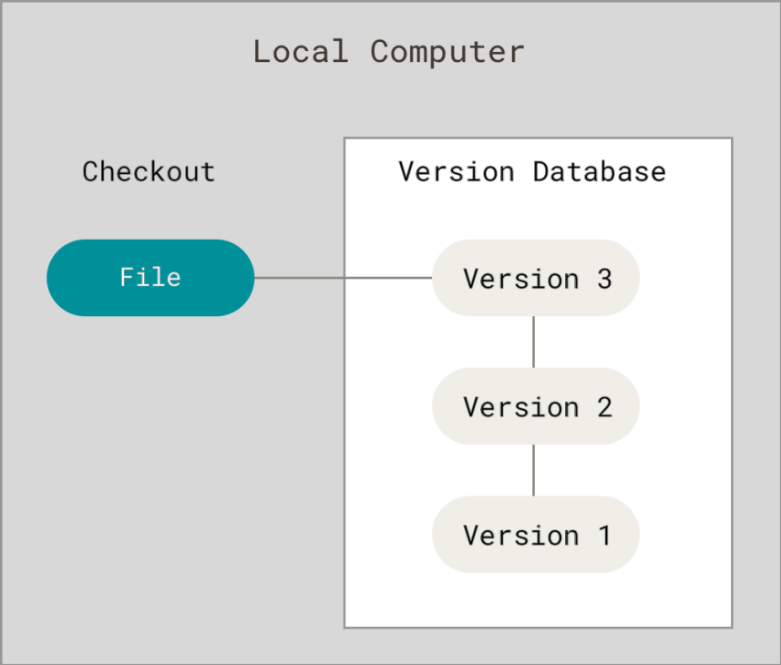
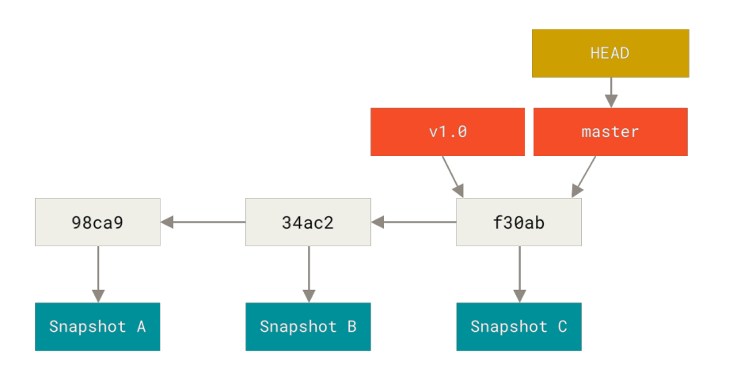

Git学习
本文最后更新于 2024年3月28日 晚上
# 起步
# 关于版本控制
什么是 “版本控制”？我为什么要关心它呢？ 版本控制是一种记录一个或若干文件内容变化，以便将来查阅特 定版本修订情况的系统。
如果你是位图形或网页设计师，可能会需要保存某一幅图片或页面布局文件的所有修订版本（这或许是你非常渴 望拥有的功能），采用版本控制系统（VCS）是个明智的选择。 有了它你就可以将选定的文件回溯到之前的状态，甚至将整个项目都回退到过去某个时间点的状态，你可以比较文件的变化细节，查出最后是谁修改了哪个地 方，从而找出导致怪异问题出现的原因，又是谁在何时报告了某个功能缺陷等等。 使用版本控制系统通常还意 味着，就算你乱来一气把整个项目中的文件改的改删的删，你也照样可以轻松恢复到原先的样子。 但额外增加 的工作量却微乎其微。
# 本地版本控制系统
许多人习惯用复制整个项目目录的方式来保存不同的版本，或许还会改名加上备份时间以示区别。 这么做唯一的好处就是简单，但是特别容易犯错。有时候会混淆所在的工作目录，一不小心会写错文件或者覆盖意想外的文件。
为了解决这个问题，人们很久以前就开发了许多种本地版本控制系统，大多都是采用某种简单的数据库来记录文件的历次更新差异。
# 集中化的版本控制系统
接下来人们又遇到一个问题，如何让在不同系统上的开发者协同工作？ 于是，** 集中化的版本控制系统 （Centralized Version Control Systems，简称 CVCS）** 应运而生。 这类系统，诸如 CVS 、 Subversion 以及 Perforce 等，都有一个单一的集中管理的服务器，保存所有文件的修订版本，而协同工作的人们都通过客户端连到这台服务器，取出最新的文件或者提交更新。 多年以来，这已成为版本控制系统的标准做法。

这种做法带来了许多好处，特别是相较于老式的本地 VCS 来说。 现在，每个人都可以在一定程度上看到项目中的其他人正在做些什么。而管理员也可以轻松掌控每个开发者的权限，并且管理一个 CVCS 要远比在各个客户端上维护本地数据库来得轻松容易。
事分两面，有好有坏。 这么做最显而易见的缺点是中央服务器的单点故障。 如果宕机一小时，那么在这一小时内，谁都无法提交更新，也就无法协同工作。如果中心数据库所在的磁盘发生损坏，又没有做恰当备份，毫无疑问你将丢失所有数据 —— 包括项目的整个变更历史，只剩下人们在各自机器上保留的单独快照。 本地版本控制系统也存在类似问题，只要整个项目的历史记录被保存在单一位置，就有丢失所有历史更新记录的风险。
# 分布式版本控制系统
于是 ** 分布式版本控制系统（Distributed Version Control System，简称 DVCS）** 面世了。 在这类系统中，像 Git 、 Mercurial 、 Bazaar 以及 Darcs 等，客户端并不只提取最新版本的文件快照， 而是把代码仓库完整地镜像下来，包括完整的历史记录。 这么一来，任何一处协同工作用的服务器发生故障，事后都可以用任何一个镜像出来的本地仓库恢复。 因为每一次的克隆操作，实际上都是一次对代码仓库的完整备份。
更进一步，许多这类系统都可以指定和若干不同的远端代码仓库进行交互。籍此，你就可以在同一个项目中，分别和不同工作小组的人相互协作。你可以根据需要设定不同的协作流程，比如层次模型式的工作流，而这在以前的集中式系统中是无法实现的。
# Git 的一些特点
# 基于快照，而非差异
Git 和其它版本控制系统（包括 Subversion 和近似工具）的主要差别在于 Git 对待数据的方式。 从概念上来说，其它大部分系统以文件变更列表的方式存储信息，这类系统（ CVS 、 Subversion 、 Perforce 、 Bazaar 等等）将它们存储的信息看作是一组基本文件和每个文件随时间逐步累积的差异（它们通常称作基于差异（delta-based）的版本控制）。
基于差异的版本控制系统工作流如下：
基于快照的版本控制系统工作流如下：
Git 不按照以上方式对待或保存数据。反之， Git 更像是把数据看作是对小型文件系统的一系列快照。 在 Git 中，每当你提交更新或保存项目状态时，它基本上就会对当时的全部文件创建一个快照并保存这个快照的索引。 为了效率，如果文件没有修改， Git 不再重新存储该文件，而是只保留一个链接指向之前存储的文件。 Git 对待数据更像是一个快照流。
Git更像是一个小型的文件系统，提供了许多以此为基础构建的超强工具，而不只是一个简单的VCS
# 近乎所有操作都是本地执行
离线时可以本地进行更新或提交，联网后再提交至远程仓库。
# 保证完整性
Git 中所有的数据在存储前都计算校验和，然后以校验和来引用。这意味着不可能在 Git 不知情时更改任何文件内容或目录内容。 Git 用以计算校验和的机制叫做 SHA-1 散列（ hash ，哈希）。这是一个由 40 个十六进制字符（ 0-9 和 a-f ）组 成的字符串，基于 Git 中文件的内容或目录结构计算出来。 SHA-1 哈希看起来是这样：
1 | |
Git 数据库中保存的信息都是以文件内容的哈希值来索引，而不是文件名。
# Git 一般只添加不删除
你执行的 Git 操作，几乎只往 Git 数据库中添加数据。你很难使用 Git 从数据库中删除数据，也就是说 Git 几乎不会执行任何可能导致文件不可恢复的操作。一旦提交快照到 Git 中，就难以丢失数据，特别是如果你定期的推送数据库到其它仓库的话，但是未提交更新时有可能丢失或弄乱修改的内容的风险。
更深度探讨 Git 如何保存数据及恢复丢失数据的话题，请参考撤销操作
# 三种状态
Git 有三种状态，你的文件可能处于其中之一： 已提交（committed） 、 已修改（modified） 和 已暂存（staged ）。
-
已修改表示修改了文件，但还没保存到数据库中。
-
已暂存表示对一个已修改文件的当前版本做了标记，使之包含在下次提交的快照中。
-
已提交表示数据已经安全地保存在本地数据库中。
这会让我们的 Git 项目拥有三个阶段：工作区、暂存区以及 Git 目录。
工作区是对项目的某个版本独立提取出来的内容。 这些从 Git 仓库的压缩数据库中提取出来的文件，放在磁盘上 供你使用或修改。
暂存区是一个文件，保存了下次将要提交的文件列表信息，一般在 Git 仓库目录中。 按照 Git 的术语叫做 “索引”，不过一般说法还是叫 “暂存区”。
Git 仓库目录是 Git 用来保存项目的元数据和对象数据库的地方。 这是 Git 中最重要的部分，从其它计算机克隆仓库时，复制的就是这里的数据。
# Git 流程
- 在工作区修改文件 (modified)
- 将下次提交的更改选择性暂存，将部分更改添加到暂存区 (staged)
- 提交更新，找到暂存区的文件，将快照永久性地存储到 Git 目录 (committed)
如果 Git 目录中保存着特定版本的文件，就属于已提交状态。 如果文件已修改并放入暂存区，就属于已暂存状态。 如果自上次检出后，作了修改但还没有放到暂存区域，就是已修改状态
# Git 配置
# 初次运行配置
Git 自带 git config 工具来帮助设置 Git 外观和行为配置变量，变量分别存储在 3 个不同地文件中
/etc/gitconfig文件：位于Git目录下，包含系统上每一个用户以及仓库的通用配置。执行git config --list --system访问该文件~/.gitconfig或~/.config/config文件（windows中位于%USERPROFILE%目录下的.gitconfig文件）：只针对当前用户。执行git config --list --global访问该文件，这会对你系统上所有的仓库生效。- 当前使用仓库的
Git目录中的.config文件.config：只针对该仓库。执行git config --list --local访问该文件。默认情况使用。
配置文件会通过 3 > 2 > 1 的顺序进行配置覆盖
可以执行 git config --list --show-origin 查看所有的配置变量以及它们所在的文件
# 配置用户信息
每一次 Git 提交都会将这些信息写入提交中且不可更改。邮箱可以不存在，只是用来标识某个用户
1 | |
可以通过 git config <key> 的 方式查看某一变量
# 配置文本编辑器
git config --global core.editor <editor> ，若在 windows 中则需添加绝对路径 $ git config --global core.editor <path/to/editor>
# 检查配置信息
使用 git config --list 命令查看所有配置的变量，Git 会读取所有 .gitconfig 文件，可能会包含相同变量，Git 只使用最后被找到的变量。
# 获取帮助
下面是三种等价配置
1 | |
若不想获取太详细的信息，则使用 git <verb> -h
例如，要想获得 git config 命令的手册，执行 git help config
# Git 基础
# 获取仓库
两种方式：
-
将尚未成为仓库的文件夹变成仓库
-
通过 cd 命令进入文件夹
-
执行
git init将该文件夹变为仓库- 该命令将创建一个名为
.git的子目录，默认为隐藏目录
- 该命令将创建一个名为
-
创建并编写文件
-
添加文件至暂存区
1
git add . -
可以执行以下命令进行提交
1
git commit -m 'initial project version'
-
-
从其他服务器克隆一个已存在的 Git 仓库
- 运行
git clone <url> [name]命令获取 Git 仓库[name]：设置clone之后的本地仓库名
- 运行
# 更新记录至仓库
工作目录下的文件有且只有已跟踪和未跟踪两种状态。
已跟踪指已被纳入版本控制的文件，在上一次快照有记录。工作一段时间后它们的状态可能是未修改，已修改或已放入暂存区。简而言之，已跟踪的文件就是 Git 已经知道的文件。
工作目录中除已跟踪文件外的其它所有文件都属于未跟踪文件，它们既不存在于上次快照的记录中，也没有被放入暂存区。初次克隆某个仓库的时候，工作目录中的所有文件都属于已跟踪文件，并处于未修改状态，因为 Git 刚刚检出了它们，而你尚未编辑过它们。
编辑过某些文件之后，由于自上次提交后你对它们做了修改， Git 将它们标记为已修改文件。 在工作时，你可以选择性地将这些修改过的文件放入暂存区，然后提交所有已暂存的修改，如此反复。
文件周期变化如下：
使用 git add 命令后即代表该文件被追踪
# 检查当前文件状态
运行 git status 命令查看哪些文件处于什么状态。如果在克隆仓库后立即使用此命令，会看到类似这样的输出：
1 | |
这说明你现在的工作目录相当干净。换句话说，所有已跟踪文件在上次提交后都未被更改过。 此外，上面的信息还表明，当前目录下没有出现任何处于未跟踪状态的新文件，否则 Git 会在新添加跟踪文件中列出来
# 新添加跟踪文件
例：新建 README.txt 文件
运行 git status 命令，会出现以下内容：
1 | |
在状态报告中可以看到新建的 README.txt 文件出现在 Untracked files 下面，代表其未被跟踪。即未曾出现在快照中。
# 跟踪新文件
运行 git add README.txt 命令，会出现以下内容：
1 | |
Changes to be committed 代表该文件已被放入暂存区 (staged)，现在已被跟踪
# 暂存已经修改的文件
例：该目录中有一被跟踪的 README.md 文件，我们对其修改后，会出现以下内容：
1 | |
文件 README.md 出现在 Changes not staged for commit 这行下面，说明已跟踪文件的内容发生了变化，但还没有放到暂存区。再次运行
1 | |
会出现以下内容：
1 | |
现在两个文件都已暂存，下次提交时就会一并记录到仓库。
此时若你再次修改 README.md 或 README.txt 会出现以下：
1 | |
代表着 Git 只不过暂存了你运行 git add 命令时的版本。如果你现在提交，版本将会是你最后一次运行 git add 命令时的那个版本，而不是你运行 git commit 时，在工作目录中的当前版本。所以，运行了 git add 之后又作了修订的文件，需要重新运行 git add 把最新版本重新暂存起来：
# 状态简览
git status -s 或 git status --short 可简略查看信息，例：
1 | |
?? 标记：新添加的未跟踪文件
A 标记：新添加到暂存区中的文件
M 标记：修改过的文件
输出中有两栏，左栏指明了暂存区的状态，右栏指明了工作区的状态。例如，上面的状态报告显示： README 文件 在工作区已修改但尚未暂存，而 lib/simplegit.rb 文件已修改且已暂存。 Rakefile 文件已修改，暂存后又作了修改，因此该文件的修改中既有已暂存的部分，又有未暂存的部分。
# 忽略文件
忽略文件 .gitignore 的格式规范如下：
- 所有空行或者以
#开头的行都会被 Git 忽略。 - 可以使用标准的
glob模式匹配，它会递归地应用在整个工作区中。 (shell 所使用的简化了的正则表达式)*匹配零个或多个任意字符[]匹配括号中的任一字符[0-9a-z]表示可以匹配到0-9，或者a-z的任一字符
?匹配任意一个字符**表示匹配零个或多个中间目录
- 匹配模式可以以
/开头防止递归。 匹配模式可以以/结尾指定目录。 - 要忽略指定模式以外的文件或目录，可以在模式前加上叹号
!取反。
# 查看已暂存和未暂存的修改
1 | |
# 提交更新
执行 git commit 命令将暂存区的文件提交至仓库。此时 Git 会启动默认的编辑器，编辑器包含首行为一个空行 — 用于写入提示信息，其余为最后一次执行 git add 命令的注释信息内容。关闭编辑器后， Git 会丢弃注释信息，用输入的提交说明完成一次提交。也可直接执行 git commit -m "<msg>" 。成功后， Git 会提示你当前位于哪个分支，本 次提交的完整 SHA-1 校验和是什么，以及在本次提交中，有多少文件修订过，多少行添加和删改过。
执行 git commit -a 可以跳过暂存区，直接将未放入暂存区的已跟踪文件进行提交。
# 移除文件
要从 Git 中移除某个文件，就必须要从已跟踪文件清单中移除（确切地说，是从暂存区域移除），然后提交。 可以用 git rm 命令完成此项工作，并连带从工作目录中删除指定的文件，这样以后就不会出现在未跟踪文件清单中了。
-
单纯删除工作区文件
-
使用
linux命令rm就能解决 -
使用
git status后会出现如下内容：1
2
3
4
5
6
7
8
9$ git status
On branch master
Your branch is up-to-date with 'origin/master'.
Changes not staged for commit:
(use "git add/rm <file>..." to update what will be committed)
(use "git checkout -- <file>..." to discard changes in working
directory)
deleted: 文件名
no changes added to commit (use "git add" and/or "git commit -a") -
必须再次使用
git rm命令记录这次移除文件操作。下一次提交时，该文件不再列入版本管理，可以说该文件在Git仓库中的新版本已经不存在了。
-
-
删除已放入暂存区的文件或已经修改的文件
1
2git rm -f <file> #会将已放入暂存区的文件删除(工作区的文件将会一并删除)，会暂存一条删除的变化，用于提交
git rm -f --cached <file> #会将已放入暂存区的文件删除但仍会保留工作区的文件
# 移动文件 (修改文件名称)
不像其它的 VCS 系统， Git 并不显式跟踪文件移动操作。 如果在 Git 中重命名了某个文件，仓库中存储的元数据并不会体现出这是一次改名操作。 不过 Git 非常聪明，它会推断出究竟发生了什么。
要在 Git 中对文件改名，使用下面的命令
1 | |
它会恰如预期般正常工作。 实际上，即便此时查看状态信息，也会明白无误地看到关于重命名操作的说明：
1 | |
其实，运行 git mv 就相当于运行了下面三条命令：
1 | |
如此分开操作， Git 也会意识到这是一次重命名，所以不管何种方式结果都一样。 两者唯一的区别在于， git mv 是一条命令而非三条命令，直接使用 git mv 方便得多。 不过在使用其他工具重命名文件时，记得在提交前 git rm 删除旧文件名，再 git add 添加新文件名。
# 查看提交历史
在提交了若干更新，又或者克隆了某个项目之后，你也许想回顾下提交历史。完成这个任务最简单而又有效的工具是 git log 命令。
我们使用一个非常简单的 “simplegit” 项目作为示例。 运行下面的命令获取该项目：
1 | |
当你在此项目中运行 git log 命令时，可以看到下面的输出：
1 | |
不传入任何参数的默认情况下， git log 会按时间先后顺序列出所有的提交，最近的更新排在最上面。 正如你所看到的，这个命令会列出每个提交的 SHA-1 校验和、作者的名字和电子邮件地址、提交时间以及提交说明。
# 补丁式的提交历史
使用下面的命令查看补丁：
1 | |
例如显示前两条日志条目：
1 | |
该选项除了显示基本信息之外，还附带了每次提交的变化。
# 统计式的提交历史
你也使用以下命令为 git log 显示一系列简略的统计信息：
1 | |
该命令会有以下输出：
1 | |
# 格式化式的提交历史
git log 的 --pretty 选项会提供一系列不同的格式化输出
1 | |
除了上述操作， --pretty 选项提供了更强大的格式参数 format ：
1 | |
# 常用选项
| 选项 | 说明 |
|---|---|
%H |
提交的完整哈希值 |
%h |
提交的简写哈希值 |
%T |
树的完整哈希值 |
%t |
树的简写哈希值 |
%P |
父提交的完整哈希值 |
%p |
父提交的简写哈希值 |
%an |
作者名字 |
%ae |
作者的电子邮件地址 |
%ad |
作者修订日期（可以用 --date = 选项 来定制格式） |
%ar |
作者修订日期，按多久以前的方式显示 |
%cn |
提交者的名字 |
%ce |
提交者的电子邮件地址 |
%cd |
提交日期 |
%cr |
提交日期（距今多长时间） |
%s |
提交说明 |
| 选项 | 说明 |
| ----------------- | ------------------------------------------------------------ |
-p |
按补丁格式显示每个提交引入的差异 |
--stat |
显示每次提交的文件修改统计信息 |
--shortstat |
只显示 --stat 中最后的行数修改添加移除统计 |
--name-only |
仅在提交信息后显示已修改的文件清单 |
--name-status |
显示新增、修改、删除的文件清单 |
--abbrev-commit |
仅显示 SHA-1 校验和所有 40 个字符中的前几个字符 |
--relative-date |
使用较短的相对时间而不是完整格式显示日期（比如 “2 weeks ago”） |
--graph |
在日志旁以 ASCII 图形显示分支与合并历史 |
--pretty |
使用其他格式显示历史提交信息。可用的选项包括 oneline 、 short 、 full 、 fuller 和 format （用来定义自己的格式） |
--oneline |
--pretty=oneline --abbrev-commit 合用的简写 |
# 限制日志输出数量
使用如下方式限制日志输出数量：
1 | |
# 通过日期限制日志输出数量
使用以下命令限制日志输出数量：
1 | |
该命令可用的格式十分丰富 —— 可以是类似 “2008-01-15” 的具体的某一天，也可以是类似 “2 years 1 day 3 minutes ago” 的相对日期。
还可以过滤出匹配指定条件的提交。 用 --author 选项显示指定作者的提交，用 --grep 选项搜索提交说明中 的关键字。
[!Important]
你可以指定多个
--author和--grep搜索条件，这样会只输出匹配 任意--author模式和任意--grep模式的提交。然而，如果你添加了--all-match选项， 则只会输出匹配所有--grep模式的提交。
另一个非常有用的过滤器是 -S （俗称 “pickaxe” 选项，取 “用鹤嘴锄在土里捡石头” 之意）， 它接受一个字符串参数，并且只会显示那些添加或删除了该字符串的提交。
1 | |
最后一个很实用的 git log 选项是路径（path）， 如果只关心某些文件或者目录的历史提交，可以在 git log 选项的最后指定它们的路径。 因为是放在最后位置上的选项，所以用两个短划线（–）隔开之前的选项和后面限 定的路径名。
# 常用选项
| 选项 | 说明 |
|---|---|
-<n> |
仅显示最近的 n 条提交 |
--since , --after |
仅显示指定时间之后的提交。 |
--until , --before |
仅显示指定时间之前的提交。 |
--author |
仅显示作者匹配指定字符串的提交。 |
--committer |
仅显示提交者匹配指定字符串的提交。 |
--grep |
仅显示提交说明中包含指定字符串的提交。 |
-S |
仅显示添加或删除内容匹配指定字符串的提交。 |
# 撤销操作
在任何一个阶段，你都有可能想要撤消某些操作。 这里，我们将会学习几个撤消你所做修改的基本工具。 注意，有些撤消操作是不可逆的。 这是在使用 Git 的过程中，会因为操作失误而导致之前的工作丢失的少有的几个地方之一。
# 撤销提交
1 | |
# 取消暂存的文件
1 | |
[!Caution]
git reset确实是个危险的命令，如果加上了--hard选项则更是如此。 然而在上述场景中，工作目录中的文件尚未修改，因此相对安全一些。到目前为止这个神奇的调用就是你需要对
git reset命令了解的全部。 我们将会在重置揭密中了解 reset 的 更多细节以及如何掌握它做一些真正有趣的事。
# 撤销文件的修改
1 | |
[!Caution]
请务必记得
git checkout --是一个危险的命令。 你对那个文件在本地的任何修改都会消失 ——Git会用最近提交的版本覆盖掉它。除非你确实清楚不想要对那个文件的本地修改了，否则请不要使用这个命令。
记住，在
Git中任何已提交的东西几乎总是可以恢复的。 甚至那些被删除的分支中的提交或使用--amend选项覆盖的提交也可以恢复（阅读数据恢复了解数据恢复）。 然而，任何你未提交的东西丢失后很可能再也找不到了。
# 远程仓库
远程仓库是指托管在因特网或其他网络中的你的项目的版本库。你可以有好几个远程仓库，通常有些仓库对你只读，有些则可以读写。 与他人协作涉及管理远程仓库以及根据需要推送或拉取数据。管理远程仓库包括了解如何添加远程仓库、移除无效的远程仓库、管理不同的远程分支并定义它们是否被跟踪等等。
1 | |
# 查看远程仓库
使用如下命令，会列出你指定的每一个远程服务器的简写。 如果你已经克隆了自己的仓库，那么至少应该能看到 origin —— 这是 Git 给你克隆的仓库服务器的默认名字
1 | |
# 查看单个远程仓库
如果想要查看某一个远程仓库的更多信息，可以运行以下命令：
1 | |
它同样会列出远程仓库的 URL 与跟踪分支的信息。 这些信息非常有用，它告诉你正处于哪个分支，并且如果运行 git pull ， 就会抓取所有的远程引用，然后将远程 master 分支合并到本地 master 分支。 它也会列出拉取到的所有远程引用。
这个命令会列出当你在特定的分支上执行 git push 会自动地推送到哪一个远程分支。它也同样地列出了哪些远程分支不在你的本地，哪些远程分支已经从服务器上移除了，还有当你执行 git pull 时哪些本地分支可以与它跟踪的远程分支自动合并。
# 添加远程仓库
1 | |
# 远程仓库的重命名与移除
1 | |
# 推送到远程仓库
当你想分享你的项目时，必须将其推送到上游，使用以下命令推送至远程仓库
1 | |
# 从远程仓库中抓取与拉取
从远程仓库中获得数据，可以执行如下命令：
1 | |
这个命令会访问远程仓库，从中拉取所有你还没有的数据。 执行完成后，你将会拥有那个远程仓库中所有分支的引用，可以随时合并或查看。
[!Caution]
必须注意
git fetch命令只会将数据下载到你的本地仓库 —— 它并不会自动合并或修改你当前的工作。当准备好时你必须手动将其合并入你的工作。
如果你的当前分支设置了跟踪远程分支（阅读下一节 Git 分支了解更多信息），那么可以用 git pull 命令来自动抓取后合并该远程分支到当前分支。 这或许是个更加简单舒服的工作流程。默认情况下， git clone 命令会自动设置本地 master 分支跟踪克隆的远程仓库的 master 分支（或其它名字的默认分支）。运行 git pull 通常会从最初克隆的服务器上抓取数据并自动尝试合并到当前所在的分支。
1 | |
# 打标签
像其他版本控制系统（ VCS ）一样， Git 可以给仓库历史中的某一个提交打上标签，以示重要。 比较有代表性的是人们会使用这个功能来标记发布结点（ v1.0 、 v2.0 等等）。
# 列出标签
在 Git 中列出已有的标签非常简单，只需要输入如下命令，就能按字母顺序列出标签：
1 | |
你也可以按照特定的模式查找标签。 例如， Git 自身的源代码仓库包含标签的数量超过 500 个。 如果只对 1.8.5 系列感兴趣，可以运行：
1 | |
1 | |
[!Important]
按照通配符列出标签需要
-l或--list选项，如果你只想要完整的标签列表，那么运行git tag就会默认假定你想要一个列表，它会直接给你列出来， 此时的-l或--list是可选的。 然而，如果你提供了一个匹配标签名的通配模式，那么-l或--list就是强制使用的。
# 创建标签
Git 支持两种标签：轻量标签（lightweight）与 附注标签（annotated）。
轻量标签很像一个不会改变的分支 —— 它只是某个特定提交的引用。
附注标签是存储在 Git 数据库中的一个完整对象， 它们是可以被校验的，其中包含打标签者的名字、电子邮件 地址、日期时间，此外还有一个标签信息，并且可以使用 GNU Privacy Guard （GPG） 签名并验证。 通常会建议创建附注标签，这样你可以拥有以上所有信息。但是如果你只是想用一个临时的标签， 或者因为某些原因不想要保存这些信息，那么也可以用轻量标签。
# 附注标签
使用以下方式添加附注标签：
1 | |
-m 选项指定了一条将会存储在标签中的信息。如果没有为附注标签指定一条信息， Git 会启动编辑器要求你输入信息。
通过使用 git show 命令可以看到标签信息和与之对应的提交信息：
1 | |
# 轻量标签
轻量标签本质上是将提交校验和存储到一个文件中 —— 没有保存任何其他信息。 创建轻量标签，不需要使用 -a 、 -s 或 -m 选项，只需要提供标签名字：
1 | |
这时，如果在标签上运行 git show ，你不会看到额外的标签信息。 命令只会显示出提交信息：
1 | |
# 后期打标签
你也可以对过去的提交打标签。 假设提交历史是这样的：
1 | |
现在，假设在 v1.2 时你忘记给项目打标签，也就是在 “ updated rakefile ” 提交。 你可以在之后补上标签。 要在那个提交上打标签，你需要在命令的末尾指定提交的校验和（或部分校验和）：
1 | |
# 共享标签
默认情况下， git push 命令并不会传送标签到远程仓库服务器上。 在创建完标签后你必须显式地推送标签到共享服务器上。 这个过程就像共享远程分支一样 —— 你可以运行以下命令来推送标签：
1 | |
[!Important]
git push推送两种标签 使用git push --tags推送标签并不会区分轻量标签和附注标签， 没有简单的选项能够让你只选择推送一种标签。
# 删除标签
要删除掉你本地仓库上的标签，可以使用如下名命令：
1 | |
注意上述命令并不会从任何远程仓库中移除这个标签，你必须用如下命令来更新远程仓库：
1 | |
另外一种高效的删除方式为：
1 | |
# 检出标签
如果你想查看某个标签所指向的文件版本，可以使用如下命令，
1 | |
[!Caution]
这个操作使你的仓库处于 “ 分离头指针（detached HEAD）” 的状态 —— 这个状态有些不好的副作用
在 “分离头指针” 状态下，如果你做了某些更改然后提交它们，标签不会发生变化，但你的新提交将不属于任何分支，并且将无法访问，除非通过确切的提交哈希才能访问。 因此，如果你需要进行更改，比如你要修复旧版本中的错误，那么通常需要创建一个新分支
# 基本操作
1 | |
# Git 别名
Git 并不会在你输入部分命令时自动推断出你想要的命令。 如果不想每次都输入完整的 Git 命令，可以通过 git config 文件来轻松地为每一个命令设置一个别名。 这里有一些例子你可以试试：
1 | |
现在你你可以使用如下别名来代替一些命令：
1 | |
可以看出， Git 只是简单地将别名替换为对应的命令。
然而，你可能想要执行外部命令，而不是一个 Git 子命令。 如果是那样的话，可以在命令前面加入 ! 符号。
1 | |
这样当你执行 git l 命令时，实际上会执行 ls 命令
# Git 分支
几乎所有的版本控制系统都以某种形式支持分支。使用分支意味着你可以把你的工作从开发主线上分离开来，以免影响开发主线。在很多版本控制系统中，这是一个略微低效的过程 —— 常常需要完全创建一个源代码目录的副本。对于大项目来说，这样的过程会耗费很多时间。
然而 Git 处理分支的方式可谓是难以置信的轻量，创建新分支这一操作几乎能在瞬间完成，并且在不同分支之间的切换操作也是一样便捷。 与许多其它版本控制系统不同， Git 鼓励在工作流程中频繁地使用分支与合并，哪怕一天之内进行许多次。理解和精通这一特性，你便会意识到 Git 是如此的强大而又独特，并且从此真正改变你的开发方式。
# 分支简介
在进行提交操作时， Git 会保存一个提交对象（commit object）。 知道了 Git 保存数据的方式，我们可以很自然的想到 —— 该提交对象会包含一个指向暂存内容快照的指针。 但不仅仅是这样，该提交对象还包含了作者的姓名和邮箱、提交时输入的信息以及指向它的父对象的指针。 首次提交产生的提交对象没有父对象，普通提交操作产生的提交对象有一个父对象， 而由多个分支合并产生的提交对象有多个父对象。
为了更加形象地说明，我们假设现在有一个工作目录，里面包含了三个将要被暂存和提交的文件。 暂存操作会为每一个文件计算校验和（使用我们在完整性中提到的 SHA-1 哈希算法），然后会把当前版本的文件快照保存到 Git 仓库中 （ Git 使用 blob 对象来保存它们），最终将校验和加入到暂存区域等待提交。
当使用 git commit 进行提交操作时， Git 会先计算每一个子目录（本例中只有项目根目录）的校验和， 然后 在 Git 仓库中这些校验和保存为树对象。随后， Git 便会创建一个提交对象， 它除了包含上面提到的那些信息外，还包含指向这个树对象（项目根目录）的指针。 如此一来， Git 就可以在需要的时候重现此次保存的快照。 现在， Git 仓库中有五个对象：三个 blob 对象（保存着文件快照）、一个 ** 树对象（记录着目录结构和 blob 对 象索引）** 以及一个 提交对象（包含着指向前述树对象的指针和所有提交信息）。
首次提交对象及其树结构如下：
做些修改后再次提交，那么这次产生的提交对象会包含一个指向上次提交对象（父对象）的指针：
# Git 分支本质
指向提交对象的可移动指针，默认名字为 master 。在多次提交操作之后，你其实已经有一个指向最后那个提交对象的 master 分支。 master 分支会在每次提交时自动向前移动。
[!Note]
Git的master分支并不是一个特殊分支。 它就跟其它分支完全没有区别。 之所以几乎每一个仓库都有master分支，是因为git init命令默认创建它，并且大多数人都懒得去改动它。
# 分支新建
使用如下命令创建一个分支：
1 | |
当然上述命令并不会让你切换至新创建的分支
例如：当我想创建一个 testing 分支，使用如下命令：
1 | |
提交历史会如下显示：
那么， Git 又是怎么知道当前在哪一个分支上呢？ 也很简单，它有一个名为 HEAD 的特殊指针。指向当前所在的本地分支。
# 分支切换
执行如下命令切换至对应分支：
1 | |
这样 HEAD 就会指向指定的分支了。当你再次提交时，指定的分支和 HEAD 将会向前移动，其他分支将会留在原地。
[!Important]
分支切换会改变你工作目录中的文件。在切换分支时，一定要注意你工作目录里的文件会被改变。 如果是切换到一个较旧的分支，你的工作目录会恢复到该分支最后一次提交时的样子。 如果
Git不能干净利落地完成这个任务，它将禁止切换分支。
若你想在创建分支的时候自动切换至新分支，可以执行如下命令：
1 | |
# 分支分叉查看
当你再新创建的分支和旧分支上都做了提交，这个项目的提交历史就会产生分叉，例如：
执行如下命令，查看提交历史、各个分支的指向以及项目的分支分叉情况：
1 | |
[!Important]
由于
Git的分支实质上仅是包含所指对象校验和（长度为 40 的 SHA-1 值字符串）的文件，所以它的创建和销毁都异常高效。创建一个新分支就相当于往一个文件中写入 41 个字节（40 个字符和 1 个换行符），如此的简单能不快吗？
# 分支删除
1 | |
# 分支的合并
如果你想将两个分支合并在一起，使用如下命令：
1 | |
当你成功合并后，就可以删除你不要的分支：
1 | |
# 简单分支合并
这种情况是，想合并的分支是所处的分支的直接后继。
执行合并分支命令后， Git 会提醒你 Fast-forward (快进) ，这意为简单的移动分支指针。
Fast-forward (快进) ：当你试图合并两个分支时， 如果顺着一个分支走下去能够到达另一个分支，那么
Git在合并两者的时候， 只会简单的将指针向前推进（指针右移），因为这种情况下的合并操作没有需要解决的分歧。
# 复杂分支合并
想合并的分支不为所处的分支的直接后继。换言之，想和并的分支在所处分支之前就已经分叉开 (diverged) 了，即两个分支同时拥有一个共同的祖先。
这时当执行合并命令时，Git 会将共同祖先的快照，所处分支的快照，想合并分支的快照进行一个简单的三方合并。 Git 会创建一个新的快照，并同时创建一个提交对象指向它，随后移动所处分支至该提交对象处。此时这个提交对象拥有两个祖先 (所处分支和想和并分支指向的提交对象)。移动所处分支至新的提交对象。
# 遇到冲突时的分支合并
有时候合并操作不会如此顺利。 如果你在两个不同的分支中，对同一个文件的同一个部分进行了不同的修 改， Git 就没法干净的合并它们。
此时 Git 做了合并，但是没有自动地创建一个新的合并提交。 Git 会暂停下来，等待你去解决合并产生的冲突。
你可以在合并冲突后的任意时刻使用 git status 命令来查看那些因包含合并冲突而处于 ** 未合并（unmerged）** 状态的文件。
Git 会在有冲突的文件中加入标准的冲突解决标记，这样你可以打开这些包含冲突的文件然后手动解决冲突。 出现冲突的文件会包含一些特殊区段，看起来像下面这个样子：
1 | |
在冲突文件中， <<<<<<< HEAD 以下， ======= 以上为 HEAD 所指向的分支的内容， ======= 以下， >>>>>>> <branch> 以上为想合并的分支的内容。为了解决冲突，你必须选择使用由 ======= 分割的两部分中的一个，或者你也可以自行合并这些内容。并且删除 <<<<<<< , ======= , 和 >>>>>>> 这些内容。
在你解决了所有文件里的冲突之后，对每个文件使用 git add 命令来将其标记为冲突已解决。或者使用或者 git mergetool 命令通过 Git 自带的可视化程序执行修改。一旦暂存这些原本有冲突的文件， Git 就会将它们标记为冲突已解决。
如果你对结果感到满意，并且确定之前有冲突的的文件都已经暂存了，这时你可以输入 git commit 来完成合并提交。 默认情况下提交信息看起来像下面这个样子：
1 | |
# 分支管理
1 | |
# 远程分支
远程引用是对远程仓库的引用（指针），包括分支、标签等等。 你可以通过如下命令来显式地获得远程引用的完整列表：
1 | |
或者通过如下命令获得远程分支的更多信息：
1 | |
然而，一个更常见的做法是利用远程跟踪分支。
# 远程跟踪分支
远程跟踪分支是远程分支状态的引用。它们是你无法移动的本地引用。一旦你进行了网络通信， Git 就会为你移动它们以精确反映远程仓库的状态。请将它们看做书签， 这样可以提醒你该分支在远程仓库中的位置就是你最后一次连接到它们的位置。
它们以 <remote>/<branch> 的形式命名。 例如，如果你想要看你最后一次与远程仓库 origin 通信时 master 分支的状态，你可以查看 origin/master 分支。 你与同事合作解决一个问题并且他们推送了一个 iss53 分支，你可能有自己的本地 iss53 分支， 然而在服务器上的分支会以 origin/iss53 来表示。 这可能有一点儿难以理解，让我们来看一个例子。 假设你的网络里有一个在 git.ourcompany.com 的 Git 服 务器。 如果你从这里克隆， Git 的 clone 命令会为你自动将其命名为 origin ，拉取它的所有数据， 创建一个指向它的 master 分支的指针，并且在本地将其命名为 origin/master 。 Git 也会给你一个与 origin 的 m aster 分支在指向同一个地方的本地 master 分支，这样你就有工作的基础。
如果你在本地的 master 分支做了一些工作，在同一段时间内有其他人推送提交到 git.ourcompany.com 并且更新了它的 master 分支，这就是说你们的提交历史已走向不同的方向。 即便这样，只要你保持不与 origin 服务器连接（并拉取数据），你的 origin/master 指针就不会移动。
如果要与给定的远程仓库同步数据，使用以下命令：
1 | |
这个命令查找 “origin” 是哪一个服务器（在本例中，它是 git.ourcompany.com ），从中抓取本地没有的数据，并且更新本地数据库，移动 origin/master 指针到更新之后的位置。
# 推送
当你想要公开分享一个分支时，需要将其推送到有写入权限的远程仓库上。本地的分支并不会自动与远程仓库同步 —— 你必须显式地推送想要分享的分支。 这样，你就可以把不愿意分享的内容放到私人分支上，而将需要和别人协作的内容推送到公开分支。
使用如下命令进行推送：
1 | |
这里有些工作被简化了。 Git 自动将 <branch> 分支名字展开为：
1 | |
你也可以运行以下命令进行推送：
1 | |
它会做同样的事 —— 也就是说 “推送本地的 <branch> 分支，将其作为远程仓库的 <branch> 分支” 可以通过这种格式来推送本地分支到一个命名不相同的远程分支。
下一次其他协作者从服务器上抓取数据时，他们会在本地生成一个远程分支 <remote>/<branch> ，指向服务器的 <branch> 分支的引用。
要特别注意的一点是当抓取到新的远程跟踪分支时，本地不会自动生成一份可编辑的副本（拷贝）。 换一句话说，这种情况下，不会有一个新的 <branch> 分支 —— 只有一个不可以修改的 <remote>/<branch> 指针。
可以运行合并命令将这些工作合并到当前所在的分支。 如果想要在自己的本地分支上工作，可以将其建立在远程跟踪分支之上：
1 | |
这会给你一个用于工作的本地分支，并且起点位于 <old-sbranch> 。
# 跟踪分支
从一个远程跟踪分支检出一个本地分支会自动创建所谓的 “跟踪分支”（它跟踪的分支叫做 “上游分支”）。跟踪分支是与远程分支有直接关系的本地分支。如果在一个跟踪分支上输入 git pull ， Git 能自动地识别去哪个服务器上抓取、合并到哪个分支。
当克隆一个仓库时，它通常会自动地创建一个跟踪 origin/master 的 master 分支。 然而，如果你愿意的话可以设置其他的跟踪分支，或是一个在其他远程仓库上的跟踪分支，又或者不跟踪 master 分支。 最简单的实例就是像之前看到的那样，运行 git checkout -b <new-branch> <old-sbranch>
这是一个十分常用 的操作所以 Git 提供了 --track 快捷方式：
1 | |
由于这个操作太常用了，该捷径本身还有一个捷径。 如果你尝试检出的分支 (a) 不存在且 (b) 刚好只有一个名字与之匹配的远程分支，那么 Git 就会为你创建一个跟踪分支：
1 | |
如果想要将本地分支与远程分支设置为不同的名字，你可以轻松地使用上一个命令增加一个不同名字的本地分支：
1 | |
设置已有的本地分支跟踪一个刚刚拉取下来的远程分支，或者想要修改正在跟踪的上游分支， 你可以在任意时间使用 -u 或 --set-upstream-to 选项运行 git branch 来显式地设置：
1 | |
[!Important]
上游快捷方式
当设置好跟踪分支后，可以通过简写
@{upstream}或@{u}来引用它的上游分支。 所以处于master分支时并且它正在跟踪origin/master时，如果愿意的话可以使用git merge @{u}来取代git merge origin/master。
如果想要查看设置的所有跟踪分支，可以使用 git branch 的 -vv 选项。 这会将所有的本地分支列出来并且包含更多的信息，如每一个分支正在跟踪哪个远程分支与本地分支是否是领先、落后或是都有。
1 | |
这里可以看到 iss53 分支正在跟踪 origin/iss53 并且 “ahead” 是 2，意味着本地有两个提交还没有推送到服务器上。也能看到 master 分支正在跟踪 origin/master 分支并且是最新的。接下来可以看到 serverfix 分支正在跟踪 teamone 服务器上的 server-fix-good 分支并且领先 3 落后 1， 意味着服务器上有一次提交还没有合并入同时本地有三次提交还没有推送。 最后看到 testing 分支并没有跟踪任何远程分支。
需要重点注意的一点是这些数字的值来自于你从每个服务器上最后一次抓取的数据。 这个命令并没有连接服务器，它只会告诉你关于本地缓存的服务器数据。如果想要统计最新的领先与落后数字，需要在运行此命令前抓 取所有的远程仓库。 可以像这样做：
1 | |
# 拉取
当 git fetch 命令从服务器上抓取本地没有的数据时，它并不会修改工作目录中的内容。 它只会获取数据然 后让你自己合并。 然而，有一个命令叫作 git pull 在大多数情况下它的含义是一个 git fetch 紧接着一个 git merge 命令。 如果有一个像之前章节中演示的设置好的跟踪分支，不管它是显式地设置还是通过 clone 或 checkout 命令为你创建的， git pull 都会查找当前分支所跟踪的服务器与分支， 从服务器上抓取数据然后尝试合并入那个远程分支。 由于 git pull 的魔法经常令人困惑所以通常单独显式地使用 fetch 与 merge 命令会更好一些。
# 删除远程分支
假设你已经通过远程分支做完所有的工作了 —— 也就是说你和你的协作者已经完成了一个特性， 并且将其合并到了远程仓库的 master 分支（或任何其他稳定代码分支）。 可以运行带有 - -delete 选项的 git push 命令 来删除一个远程分支。 如果想要从服务器上删除 serverfix 分支，运行下面的命令：
1 | |
基本上这个命令做的只是从服务器上移除这个指针。 Git 服务器通常会保留数据一段时间直到垃圾回收运行，所以如果不小心删除掉了，通常是很容易恢复的。
# 变基
在 Git 中整合来自不同分支的修改主要有两种方法： merge 以及 rebase 。 在本节中我们将学习什么是 “变基”，怎样使用 “变基”，并将展示该操作的惊艳之处，以及指出在何种情况下你应避免使用它。
# 变基的基本操作
请考虑下面一个例子，你会看到开发任务分叉到两个不同分支，又各自提交了更新。
之前介绍过，整合分支最容易的方法是 merge 命令。 它会把两个分支的最新快照（ C3 和 C4 ）以及二者最近的共同祖先（ C2 ）进行三方合并，合并的结果是生成一个新的快照（并提交）。
其实，还有一种方法：你可以提取在 C4 中引入的补丁和修改，然后在 C3 的基础上应用一次。 在 Git 中，这种 操作就叫做变基（rebase）。你可以使用 rebase 命令将提交到某一分支上的所有修改都移至另一分支上，就好像 “重新播放” 一样。在这个例子中，你可以检出 experiment 分支，然后将它变基到 master 分支上：
1 | |
它的原理是首先找到这两个分支（即当前分支 experiment 、变基操作的目标基底分支 master ） 的最近共同 祖先 C2 ，然后对比当前分支相对于该祖先的历次提交，提取相应的修改并存为临时文件，然后将当前分支指向 目标基底 C3 , 最后以此将之前另存为临时文件的修改依序应用。
现在回到 master 分支，进行一次快进合并。
1 | |
这两种整合方法的最终结果没有任何区别，但是变基使得提交历史更加整洁。你在查看一个经过变基的分支的历史记录时会发现，尽管实际的开发工作是并行的，但它们看上去就像是串行的一样，提交历史是一条直线没有分叉。
一般我们这样做的目的是为了确保在向远程分支推送时能保持提交历史的整洁 —— 例如向某个其他人维护的项目贡献代码时。 在这种情况下，你首先在自己的分支里进行开发，当开发完成时你需要先将你的代码变基到 origin/master 上，然后再向主项目提交修改。 这样的话，该项目的维护者就不再需要进行整合工作，只需要快进合并便可。
请注意，无论是通过变基，还是通过三方合并，整合的最终结果所指向的快照始终是一样的，只不过提交历史不 同罢了。 变基是将一系列提交按照原有次序依次应用到另一分支上，而合并是把最终结果合在一起。
# 更有趣的变基例子
在对两个分支进行变基时，所生成的 “重放” 并不一定要在目标分支上应用，你也可以指定另外的一个分支进行应用。 考虑下面的例子：
假设你希望将 client 中的修改合并到主分支并发布，但暂时并不想合并 server 中的修改， 因为它们还需要经过更全面的测试。这时，你就可以使用 git rebase 命令的 --onto 选项， 选中在 client 分支里但不在 server 分支里的修改（即 C8 和 C9 ），将它们在 master 分支上重放：
1 | |
以上命令的意思是：取出 client 分支，找出它从 server 分支分歧之后的补丁， 然后把这些补丁在 master 分支上重放一遍，让 client 看起来像直接基于 master 修改一样。这理解起来有一点复杂，不过效果非常酷。
现在可以快进合并 master 分支了。
1 | |
接下来你决定将 server 分支中的修改也整合进来。 使用 git rebase 命令可以直接将主题分支（即本例中的 server ）变基到目标分支（即 master ）上。这样做能省去你先切换到 server 分支，再对其执行变基命令的多个步骤。
1 | |
1 | |
至此， client 和 server 分支中的修改都已经整合到主分支里了， 你可以删除这两个分支，最终提交历史会变成如下所示：
1 | |
# 变基的风险
奇妙的变基也并非完美无缺，要用它得遵守一条准则： 如果提交存在于你的仓库之外，而别人可能基于这些提交进行开发，那么不要执行变基。